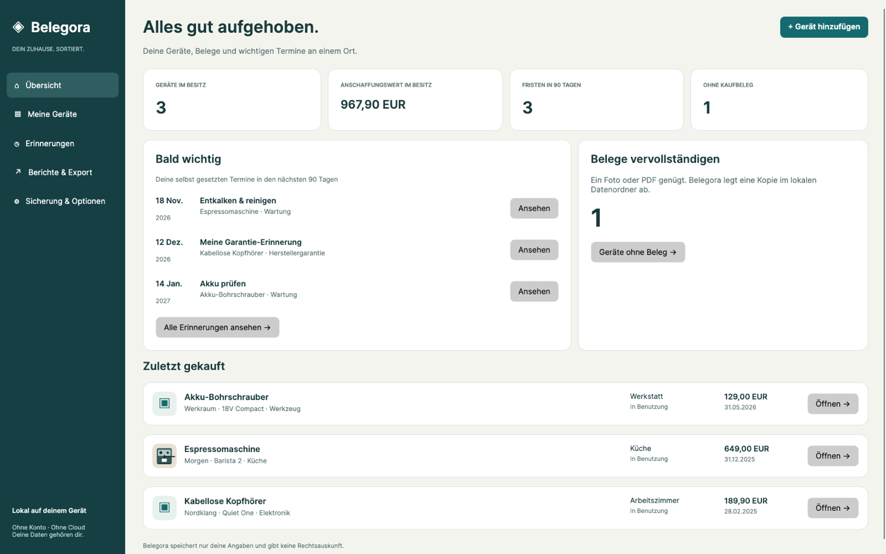
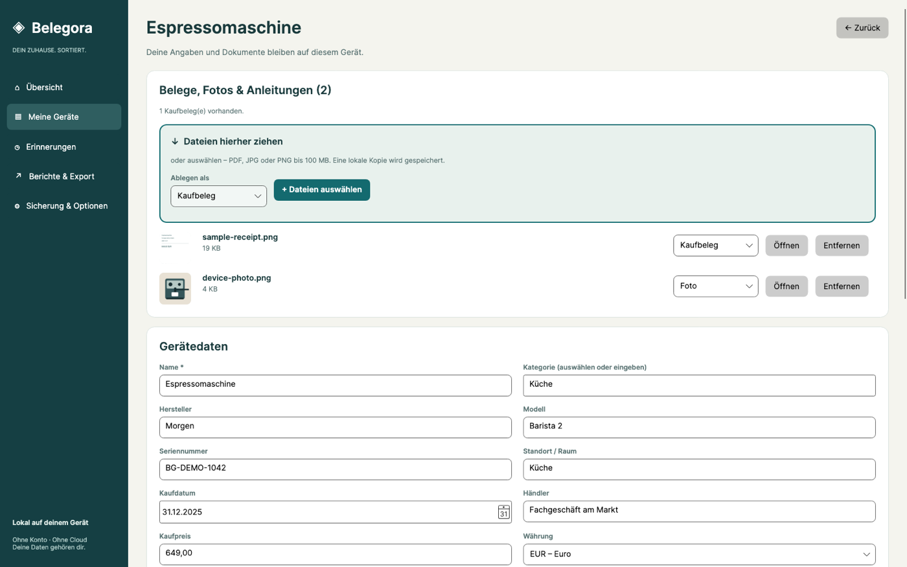
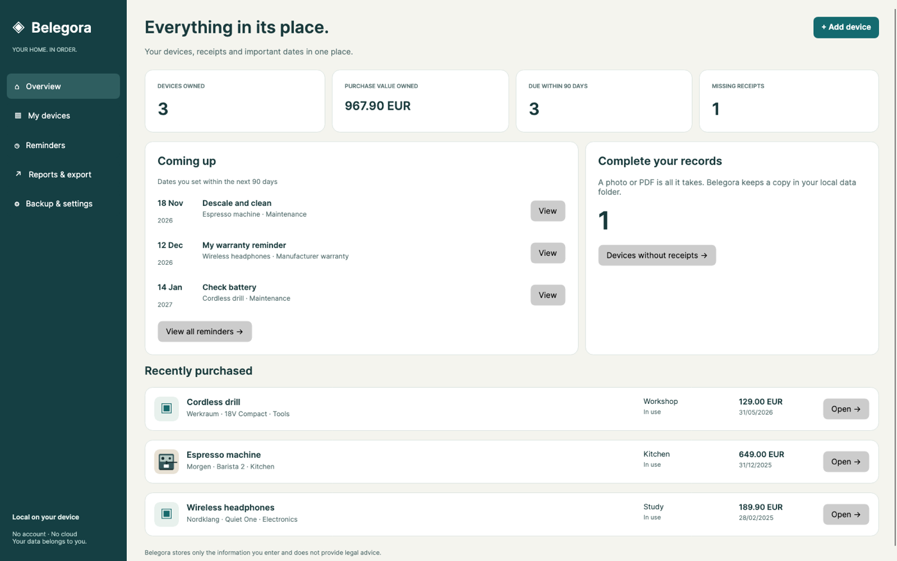

Ein Zuhause für Belege
Geräte mit Fotos, Kaufbelegen und Anleitungen verwalten. Seriennummer, Händler und Raum helfen beim Wiederfinden.
Kaufbelege, Seriennummern und eigene Erinnerungen. Alles beim richtigen Gerät – lokal auf deinem PC.
Offline · Ohne Konto · Ohne Abo
Geplanter Einmalkauf: 14,99 € in Deutschland.
In Vorbereitung für den Microsoft Store.
Küche · In Benutzung
Kaufbeleg & Anleitung abgelegt
Nächste Wartung · 15. DezemberWeniger suchen. Mehr wissen.


Geräte mit Fotos, Kaufbelegen und Anleitungen verwalten. Seriennummer, Händler und Raum helfen beim Wiederfinden.
Wartung, Rückgabe oder Garantie: Datum selbst eintragen und kommende Fristen in der geöffneten App sehen. Keine Windows-Hintergrundbenachrichtigungen. Für Hinweise außerhalb der App einen ICS-Termin in deinen Kalender exportieren; dessen Einstellungen bestimmen die Benachrichtigung.
Inventar und Geräteblätter als PDF, Gerätedaten als CSV. Druckansicht im Standardbrowser öffnen und dort drucken. Daten und Anhänge gemeinsam als ZIP sichern.
Belegora funktioniert offline, ohne App-Konto, Werbung oder Telemetrie. Deutsch und Englisch, helles und dunkles Design. Keine automatische Cloud-Synchronisierung.
Belegora speichert nur deine Angaben und gibt keine Rechtsauskunft. Du bestimmst jedes Datum selbst; Eingabehilfen prüfen keine Ansprüche.
Keep receipts, serial numbers and your own reminders together with the right device. Local on your PC.
Store copies of receipts, photos and manuals. Find devices by purchase details, room, category or tags.
Set your own maintenance, return or warranty dates. Reminders are shown in the open app. No Windows background notifications. For reminders outside the app, export an ICS event to your calendar; its settings determine notifications.
Export PDF inventory and device reports or CSV records. Open the print view in your default browser and print from there. Back up your data and attachments together as a ZIP file.
Offline. No app account, advertising, telemetry or subscription. German and English, light and dark themes. Planned as a one-time purchase; German reference price €14.99. Preparing for the Microsoft Store.
